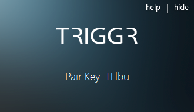

The "TRIGGR Documentation" includes information on how to get started with TRIGGR, how to troubleshoot issues, and how to contact Fether Technologies for support.
Thank you for buying/trying TRIGGR.
TRIGGR brings mobile notifications to your desktop.
First, what is TRIGGR?
TRIGGR connects your Windows PC to your Android device, allowing them to "talk". When connected, Triggr has three core features:
What's next?
We want to keep adding social apps to our list of supported notification types! If we are missing your favorite app please let us know! We also want to extend platform compatibility. Those who purchase the paid version of TRIGGR will be able to receive updates for free.
TRIGGR is free to try!
Download the TRIGGR trial app via the Google Play Store.
TRIGGR's trial period is 10 days. After 10 days of use, your trial application will expire, and you will need to buy the paid version of TRIGGR to continue using it.
Now that we have summarized TRIGGR, let's get into how to set it up.
Before you do anything else, please ensure that you download and install both the mobile and the desktop applications. TRIGGR is not a stand-alone mobile or desktop application. Both applications need eachother to communicate (or, to work).
If you have not yet downloaded either one of the apps, please download them via the TRIGGR website.
Download the mobile Android app, either from TRIGGR's website or via the Google Play Store.
Once installed on your device, the TRIGGR mobile app will look like the following:
After going through the introduction, TRIGGR is now set up on your mobile!
Download the desktop Windows app from TRIGGR's website.
Once downloaded, a file called "TriggrSetup.exe" will appear in your downloads folder. Double click on it and you will see the following dialog pop up:
Press "Install".
The installer will look like the following:
When finished, TRIGGR will automatically launch and run in the background. This could take up to a minute.
If the TRIGGR application is hidden, open the context menu and select "Show".
TRIGGR is now installed and ready to be set-up!
Let's get down to business.
Now that you have both your mobile and desktop TRIGGR applications installed, let's talk about pairing your devices. It's super easy!
When you launch the TRIGGR mobile app, it will look like the following:
When you launch the TRIGGR desktop app, it will look like the following:
On the TRIGGR desktop app, press the blue "Show Pair Key" button to receive your 5 digital, unique, alphanumeric pair key. The Pair Key will change every time you press the button.
The following is the pair key we were shown, when the "Show Pair Key" button was pressed:

As shown above, our Pair Key is "TLIbu". Now we need to enter the Pair Key into our mobile TRIGGR app.
We are now entering "TLIbu" into our TRIGGR mobile app. The Pair Key is case sensitive and needs to be entered exactly to ensure a successful connection.
If you are having trouble interpreting the given Pair Key, exit TRIGGR (via the taskbar), restart TRIGGR, and press the "Show Pair Key" button again.
The following is how our mobile app looks now that we are entering the Pair Key:
Once your Pair Key has been entered, press the "Pair" button on your TRIGGR mobile app.
You should now be connected! If you are wondering whether you are connected or not, TRIGGR's mobile screen looks like the following:
Similarly, the desktop will show a "connected" notification on the top right area of the screen to indicate that you are successfully paired.
If you are not able to pair, please try one of the following:
TRIGGR can be disconnected via the mobile application. It is built this way so that your TRIGGR connection can be automatically initiated even if your computer has been turned off, asleep, or restarted.
On your mobile TRIGGR app, you will see that you are connected.
It's that simple. Your mobile TRIGGR app will return to its initial display, and a "disconnected" notification will appear on the desktop.
Enjoy the TRIGGR experience!
Fether Technologies worked (and are still working) very hard on TRIGGR and would love to hear what you think!
Please don't hesitate to email us at triggr.info@fether.co if you have any feedback, questions, comments, feature requests, or just to say "hello"!
We would also really appreciate if you could rate our Android app(s) on the Google Play Store.
Thank you,
The Fether Team.